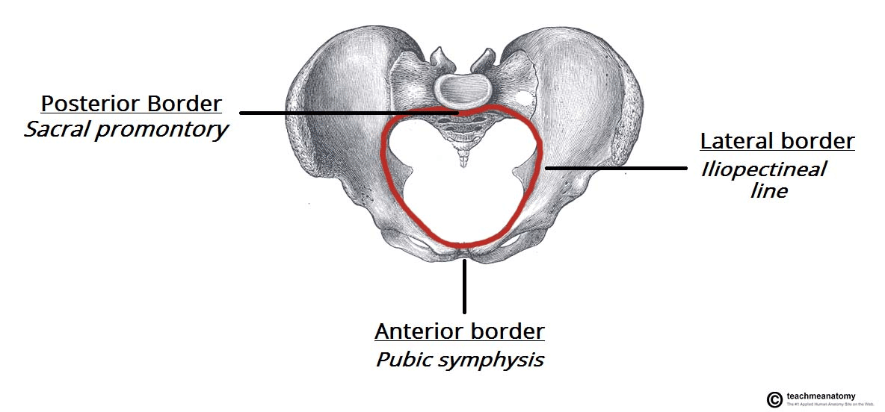
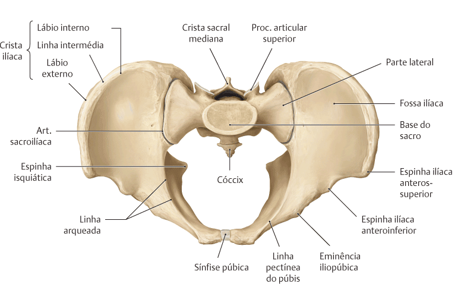
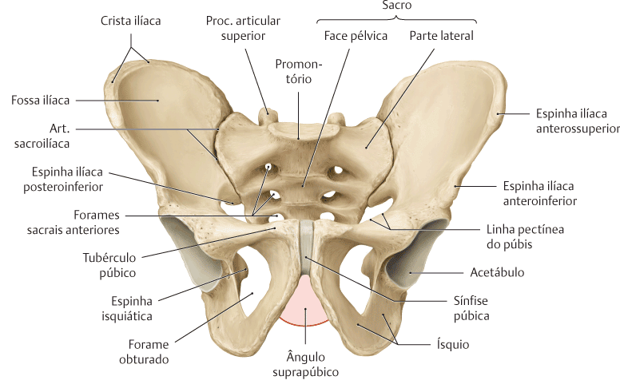
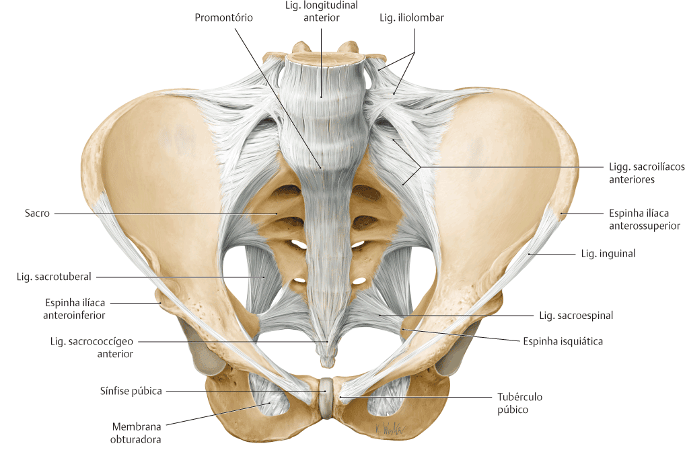

A pelve é a área de transição entre o tronco e os membros inferiores,é forte e rígida, está adaptada para desempenhar várias funções no corpo humano.
Sendo as principais funções:
Transferência de peso do esqueleto axial superior para os componentes apendiculares inferiores do esqueleto, especialmente durante o movimento;
Fornece fixação para vários músculos e ligamentos usados na locomoção;
Contém e protege as vísceras abdominopélvicas e pélvicas.
A cavidade pélvica é a parte inferior da cavidade abdominopélvica.
Anatomicamente, a pelve é a parte do corpo circundada pelo cíngulo do membro inferior (pelve óssea), parte do esqueleto apendicular do membro inferior.
Limites da pelve
A pelve é dividida em maior (falsa) e menor (verdadeira) pelo plano oblíquo da abertura superior da pelve.
Abertura superior
A margem óssea que circunda e define a abertura superior da pelve é a margem da pelve, formada:
Posteriormente = Promontórioe asa do sacro (face superior de sua parte lateral, adjacente ao corpo do sacro);
Lateralmente = Pelas linhas terminais direita e esquerda formam juntas uma estria oblíqua contínua, composta por: Linha arqueada na face interna do ílio e Linha pectínea do púbis e crista púbica, formando a margem superior do ramo superior e corpo do púbis;
Anteriormente = Sínfise púbica.

https://teachmeanatomy.info/

SCHUNKE, M. Prometheus, Anatomia geral e sistema locomotor. 4 ed. Rio de Janeiro, Guanabara Koogan, 2019.
Observe agora o arco púbico, que é formado pelos ramos isquiopúbicos (ramos inferiores conjuntos do púbis e do ísquio) dos dois lados.
Esses ramos encontram-se na sínfise púbica e suas margens inferiores definem o ângulo subpúbico.
A largura do ângulo subpúbico é determinada pela distância entre os túberes isquiáticos direito e esquerdo.
Essa largura pode ser medida com os dedos enluvados na vagina durante um exame pélvico.

SCHUNKE, M. Prometheus, Anatomia geral e sistema locomotor. 4 ed. Rio de Janeiro, Guanabara Koogan, 2019.
Abertura inferior
A abertura inferior da pelve é limitada por:
Anteriormente = Arco púbico;
Lateralmente = Túberes isquiáticos;
Póstero-lateralmente = Margem inferior do ligamento sacrotuberal (seguindo entre o cóccix e o túber isquiático);
Posteriormente = Extremidade do cóccix.

SCHUNKE, M. Prometheus, Anatomia geral e sistema locomotor. 4 ed. Rio de Janeiro, Guanabara Koogan, 2019.
Divisões da pelve
Pelve maior (falsa)
A pelve maior é circundada pela parte superior do cíngulo do membro inferior.
É Limitada pelas asas do ílio póstero-lateralmente e a face ântero-superior da vértebra S I posteriormente
É ocupada pelas vísceras abdominais inferiores, protegendo-as mais ou menos como as vísceras abdominais superiores são protegidas pela parte inferior da caixa torácica.
Pelve menor (verdadeira)
Esta parte situa-se entre as aberturas superiore inferior da pelve, que forma o arcabouço ósseo da cavidade pélvica e do períneo – dois compartimentos do tronco separados pelo diafragma da pelve, uma estrutura musculofascial.
A parte externa da pelve é coberta ou envolvida pela parede abdominal ântero-lateral inferior = anteriormente, a região glútea do membro inferior póstero-lateralmente, e o períneo inferiormente.
É limitada pelas faces pélvicas dos ossos do quadril, sacro e cóccix.
Que inclui a cavidade pélvica verdadeira e as partes profundas do períneo (compartimento perineal), especificamente as fossas isquioanais, que tem maior importância obstétrica e ginecológica.
NETTER: Frank H. Netter Atlas De Anatomia Humana. 8 ed. Rio de Janeiro: Elsevier, 2024.